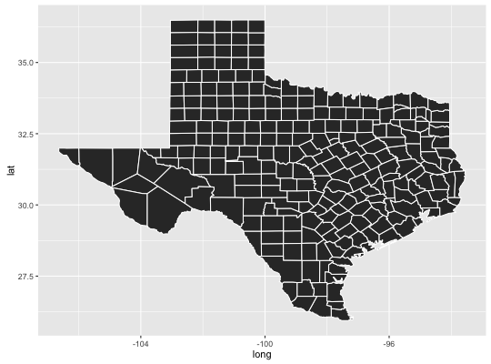

"fortify"(model, data, ...)
This function turns a map into a data frame that can more easily be plotted with ggplot2.
if (require("maps")) { ca <- map("county", "ca", plot = FALSE, fill = TRUE) head(fortify(ca)) ggplot(ca, aes(long, lat)) + geom_polygon(aes(group = group)) tx <- map("county", "texas", plot = FALSE, fill = TRUE) head(fortify(tx)) ggplot(tx, aes(long, lat)) + geom_polygon(aes(group = group), colour = "white") }